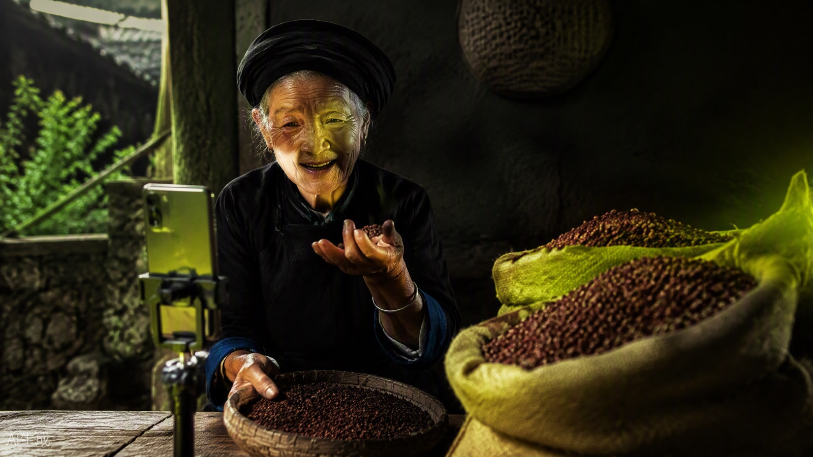
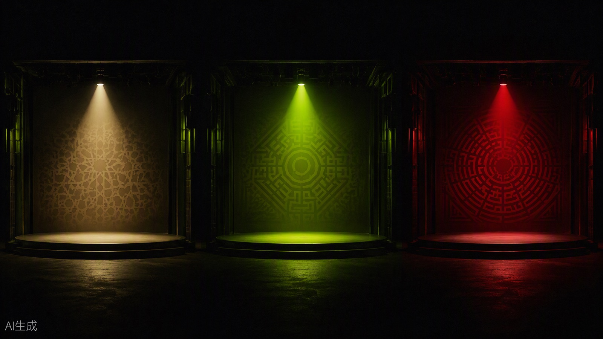

W1–W4
认知与素养
理解工具，建立判断
- 解释大模型与 Agent 的区别
- 按任务选择工具并验证输出
- 完成带 AI 使用说明的多语种短片
ICUC AIGC创意工作坊 · 2026秋季学期
AI 国际传播实务 —— 从大模型与 Agent 入门，到跨文化内容生产、多平台分发与数据复盘，完成一个真实的传播项目。
以国际传播任务为主线，将 AI 工具使用、跨文化表达和项目实践贯穿整个学期。通过个人练习与团队协作，把中国主题转化为面向海外受众的多语种、多模态内容。每次生成都回到受众与事实，每次修改都留下判断依据。
上课时使用微信扫描教师展示的本次课二维码，填写姓名和学号，提交后确认“签到成功”。
上课：每周二晚上 6 点–9 点（18:00–21:00）
渠道：课程工作台（GitHub Classroom）提交，命名规则：W周次_学号_作品名
截止：每周日晚上 9 点（21:00）截止当周作业。
规则：迟交 24h 内扣 30%，超过 24h 不计分；每件作品必须附 AI 使用声明表。
从认识 AI，到创作、分发与效果评估。学完这门课，你将能够独立解释工具选择、完成传播任务，并用作品和证据说明自己的判断。
理解工具，建立判断
把想法变成作品
让作品抵达受众
用证据检验传播
贯穿全程：核查关键事实与来源，解释跨文化表达的取舍，保留 AI 使用说明、人工审核与修改依据。
阶段目标：从大模型与 Agent 入门，认识生成式 AI 的能力、边界与协作方式，完成第一件多语种作品。
进入板块独立页面 ↗
认识 LLM 大语言模型与 Agent 智能体，思考 AI 时代自己的学习、创作与行动方向。
在个人电脑上安装 Workbuddy 和 Obsdian，然后用 Workbuddy 基于 W1 课程内容做一份课程个人心得。形式不限，可以是 DOCS、PPT、视频、图片、思维导图等。

阶段目标：围绕一个中国主题，完成选题、跨文化写作、分镜、生成、配音与剪辑，形成可展示的期中作品。
进入板块独立页面 ↗阶段目标：理解不同平台的内容呈现与分发逻辑，将单件作品改造成多平台版本，并用 Agent 工作流组织生产。
进入板块独立页面 ↗阶段目标：审查作品中的真实性、版权、隐私与 AI 使用标识，分析传播数据，完成团队作品、复盘报告与期末答辩。
进入板块独立页面 ↗← 横向滑动 · 点击卡片查看课程内容 →
逐周积累作品、工作流与传播证据，最终形成一个完整的团队国际传播项目。下列明细来自现有课程任务；前期草稿在后续周次持续完善。
W1 完成工具安装与课程个人心得；W2 仅列课堂练习成果，暂不布置课后作业。每周 mini 作业单列在下方；考勤占总评 40%，作品占 60%。
阶段成果30 秒多语种自我介绍
在个人电脑上安装 Workbuddy 和 Obsdian，然后用 Workbuddy 基于 W1 课程内容做一份课程个人心得。形式不限，可以是 DOCS、PPT、视频、图片、思维导图等。
阶段成果90 秒跨文化短片
阶段成果分发方案 + 可运行工作流
阶段成果团队传播作品 + 数据回流报告
期末整理作品与证据，展示团队成果，也说明个人贡献。
课程总评由两部分组成：考勤 40% + 作品 60%。
依据课程考勤记录评定；请假、迟到、早退等具体认定按任课教师公布的细则执行。
包括阶段短片、分发与工作流、每周作业、决策日志、团队作品与数据报告，具体构成见下方。
作品内部各项占比合计 100%，整体按 60% 计入课程总评。
W4 · 多语种表达、成片完成度与 AI 使用说明。
W8 · 选题、写作、视听呈现与跨文化适配。
W10–W12 · 平台适配、算法理解与工作流可运行性。
W1 提交课程个人心得；W2 暂不布置作业。当前题库共 11 次，综合评价完成质量。
累计记录人的判断、修改依据与主动放弃 AI 的环节。
评委 50% + 教师 30% + 同伴互评 20%，合成为本项成绩。
数据记录、分析方法、证据意识与可行建议。
总评 = 考勤成绩 × 40% + 作品综合成绩 × 60%。例如，自我介绍短片占作品成绩的 10%，折合课程总评的 6%。
期末团队作品的评分维度：国际传播力 25% / 跨文化适配 20% / AI 工具与工作流运用 20% / 创意原创 15% / 伦理与合规（含标识）10% / 数据回流分析 10%。这组维度仅用于该项作品评分，汇总后按总评的 12% 计入成绩。
考核与提交要求 →